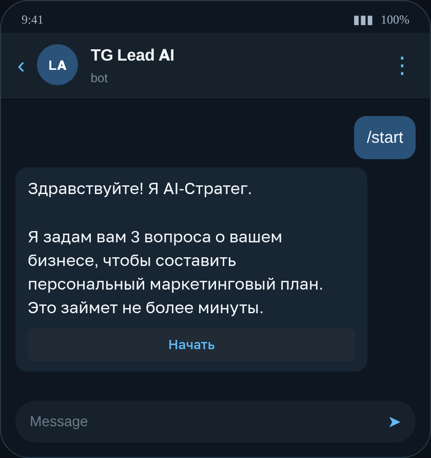
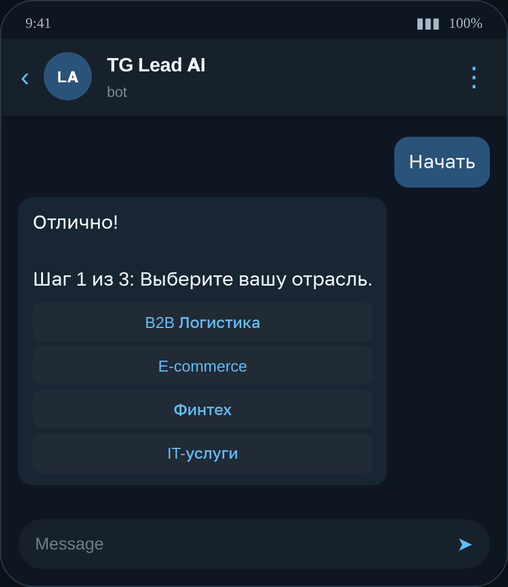
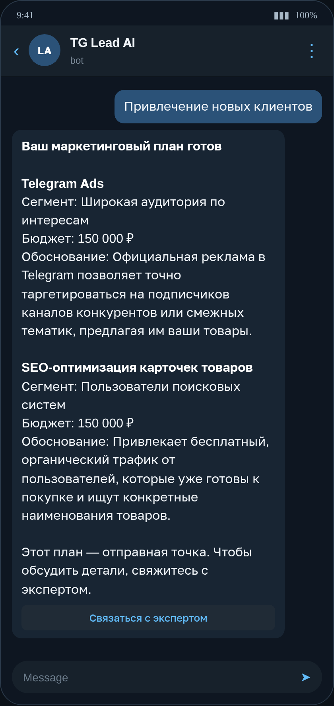
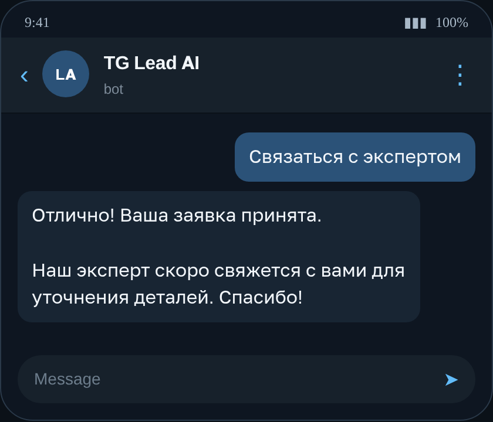

Диалог
telegram / tg-lead-aiTelegraf · polling
user
/start
bot
Здравствуйте! Я AI-Стратег. Я задам вам 3 вопроса о вашем бизнесе, чтобы составить персональный маркетинговый план. Это займет не более минуты.
user
Начать
bot
Отлично! Шаг 1 из 3: Выберите вашу отрасль. B2B Логистика · E-commerce · Финтех · IT-услуги
user
E-commerce
system
→ бюджет → цель → план → лид
Экраны




Что умеет
- Декларативный граф диалога из 7 состояний.
- 4 отрасли и 6 готовых гипотез в business-logic.json.
- Распределение бюджета между гипотезами.
- План с сегментом, потребностью и обоснованием.
- CTA «Связаться с экспертом».
- Квалификация лида и уведомление владельцу.
- 10 тестов, включая полный сценарий до LEAD_QUALIFIED.
Как устроено
src/domainконечный автомат, гипотезы, порты
src/use-casesдиалог, план, квалификация лида
src/infrastructureTelegraf, in-memory state, JSON, консоль
business-logic.jsonотрасли и гипотезы без правки кода
file tree13 строк
src/
├── domain/
│ ├── dialog-flow.config.ts
│ ├── state-machine.service.ts
│ └── hypothesis-generator.service.ts
├── use-cases/
│ ├── handle-user-interaction.use-case.ts
│ ├── get-marketing-plan.use-case.ts
│ └── qualify-lead.use-case.ts
└── infrastructure/
├── telegram/
├── persistence/
└── notifications/Что реально, а что mock
Ниже — фактическое состояние проекта. Всё, что помечено как mock или отсутствует, не выдаётся за готовую функцию.
| Пункт | Состояние |
|---|---|
| LLM | нет нет, правила и гипотезы в JSON |
| Состояние | ограничение in-memory, сбрасывается при перезапуске |
| Уведомление | ограничение консольный адаптер, не Telegram |
| План | ограничение шаблонные гипотезы и метрики |
| База | нет нет, лиды не сохраняются |
Как читать таблицу. «Не готово» — реализации нет в репозитории. «Ограничение» — функция есть, но работает в узких рамках. Это проверяется по README и коду.
Запуск
.env
BOT_TOKEN=123456:AA...terminal
bun install
cp .env.example .env
bun run startЧто дальше
- Уведомление владельцу в Telegram.
- Redis/Postgres для состояния и лидов.
- Больше отраслей и гипотез.
- LLM-генерация с проверкой фактов.
- CRM-интеграция и статусы лидов.